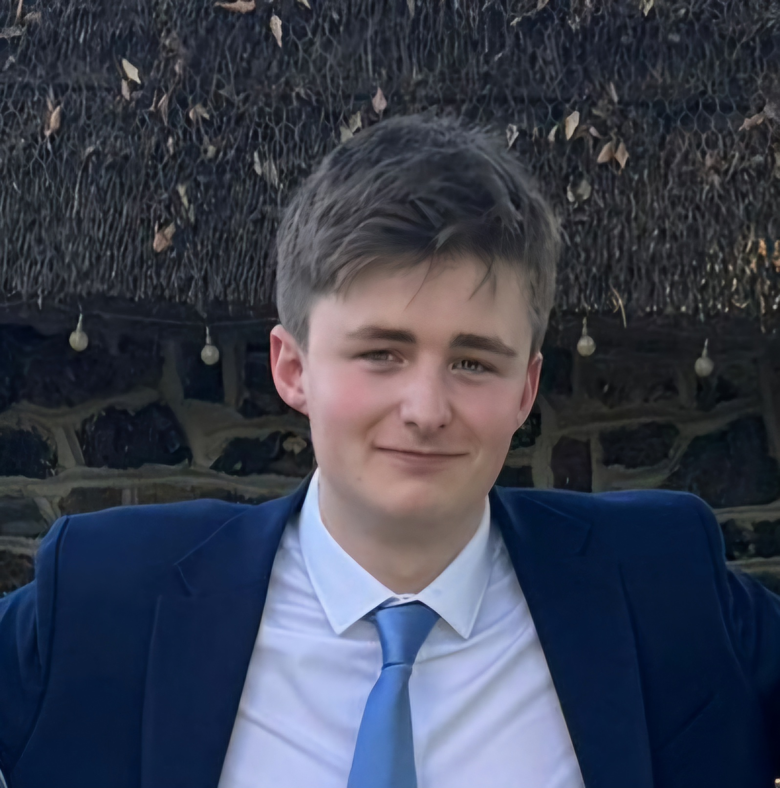

I am a PhD student in the Department of Applied Mathematics and Theoretical Physics at the University of Cambridge, under the supervision of Professor Anders C. Hansen, having recently completed Part III at Cambridge with a Distinction grade. My PhD is fully funded by the G-Research NextGen Scholarship. My research interests concern the limits of computability of solutions to PDEs, namely what assumptions on the initial data are necessary to compute the size of the solution, and if uncertainty principles appear in the absence of these assumptions. I have adapted these methods for hyperbolic, dispersive and parabolic PDEs. In addition, I am interested in variations of Dynamic Mode Decomposition for continuous time dynamical systems, with finite-difference approximations typically being used to obtain the evolution of data. I previously completed a BSc in Mathematics at the University of Warwick, where I focused mainly on Analysis.